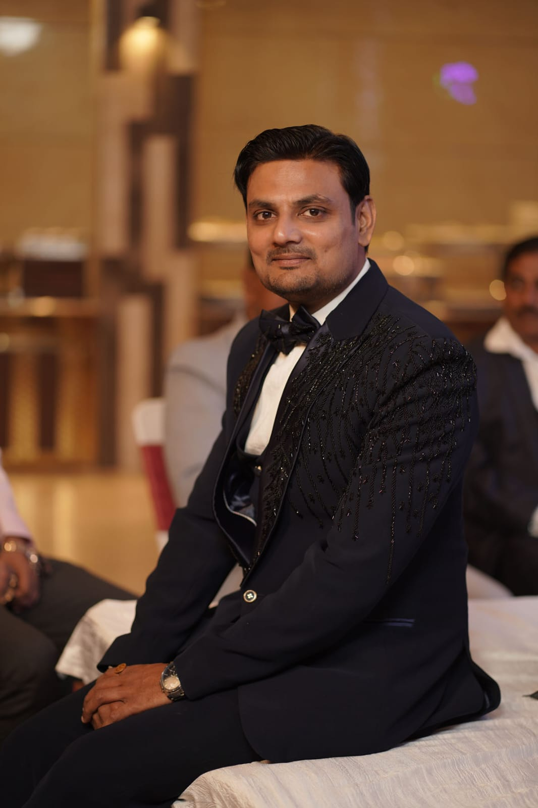

Abhishek Gupta

Summary
Energetic professional with 12 years’ experience, aspiring for a career with new heights & great opportunities including personal & professional growth by giving my best to the activities I am involved in.
Education
- 2006 - 2010: B.E. (Electrical & Electronics) from U.P.T.U. an aggregate of 69.00%.
- 2005: 12th from Dr.V.S.S.S.School with an aggregate of 69.00%.
- 2003: 10th from Dr.V.S.S.S.School with an aggregate of 59.60%.
Work Experience
April 2016 to Present:
SKU Manager (Avantika Vastralaya Unit.)
- Material management including identification of goods & services required, initiating vendor offers, submitting purchase request, receiving & inspection of materials and keeping their records.
- Manpower management including their daily job planning, manpower distribution as per section requirement, daily & monthly labor attendance.
- Preparations of proper SOP.
- Conducted Technical & Behavioral Internal training for development of subordinates & other staff down the line.
April 2013 to February 2016:
Sr. Engineer (Shree Cement Ltd.)
- Preparation of monthly IMS (Integrated Management System), MPR (Monthly Progress Report) reports including consumption of monthly spare & department expenditure
- Preparation of daily Power Auxiliary reports & its analysis.
- Carrying out of Energy conservation activities on the basis of reports analysis
- Open Access Department (Power sale & purchase to Government & other entities, IEX scheduling).
- Played a key role in effectively ensuring reliability of Switchyard & Transmission lines by carrying out condition monitoring (Thermography of Switchyard Equipment & patrolling of 200 km 132 kV & 220 kV Transmission lines on quarterly basis).
- In-house Testing of Equipment such as HV & LV Transformers, CT, PT, HT & LT Motors, relays through various testing kits.
February 2012 to March 2013:
Engineer (Shree Cement Ltd.)
- Individual handling of shift activities of O&M of CPP 2x50 MW, 4x18 MW & Green Power Plant, 132 kV & 220 kV switchyards
- Condition monitoring of drives & other equipment by performing checklists & maintaining it in the IMS system.
- Preparation of daily load management, taking MRI from 3φ ABT meters & responsible for monthly billing work for power sale
- Operation & Maintenance of 132 kV & 220 kV Switchyards.
January 2011 to February 2012:
Graduate Engineer Trainee (Shree Cement Ltd.)
- Shift activities operation & maintenance of CPP 2x50 MW, 4x18 MW & Green Power Plant.
- Responsible for synchronizing of Generators & Transmission lines to the grid as and when required.
Skills
- Good Exposure to software likes MICOM STUDIO, ETAP, VINCOM, VINPLUS, MS-Office, Excel.
- Possess strong acumen in executing tasks & projects meeting deadlines.
- Cementing healthy relationships geared towards leading workforce to accomplish business goals.
Awards and Certifications
- Possess certificate of Competency as Electrical Supervisor issued from Government of Rajasthan, Jaipur.
Training Programs
- “Importance of Lock-out & Tag-Out in Industries” conducted by Factories & Boilers Inspection Department, Jaipur.
- 03 day training program on “Distance & Generator Protection” organized by ALSTOM.
Other